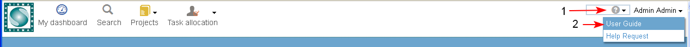
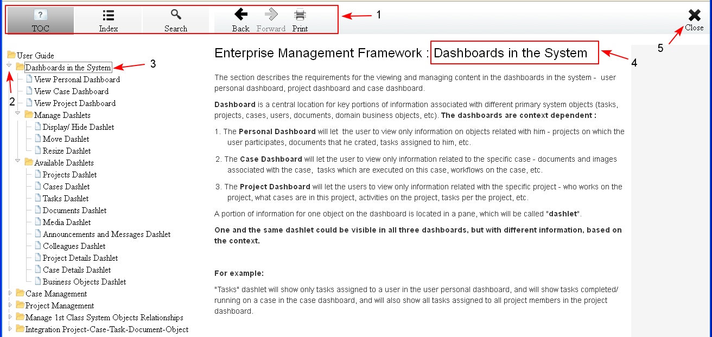

Sirma Platform : Access User Guide
- In the Main menu the user could access the user guide online, selecting the Help menu/ User Guide (1-2).

- The system opens the last version of the user guide in another browser window.
- The user could select different view (TOC/ Index), Search for specific content in the guide or Print the current page (1).
- In TOC (table of content) view the user may open and review the sub topics (2).
- The name of a topic/ sub topic is a direct link (3) to the corresponding page (4) in the user guide.
- The guide could be closed clicking "Close" (5).
